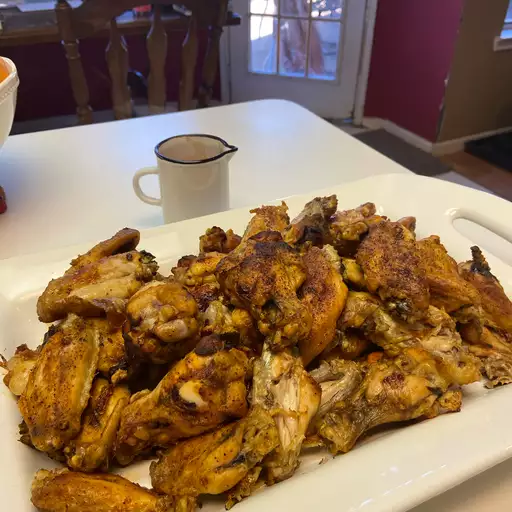

Wings

Introduction
This cheese dip has all the best ingredients! I compiled it from various other recipes and it's my favorite by far. Serve as a dip at a party or with sour cream and jalapeños to make nachos.
Ingredients
- Pack of chicken wings
- Your choice of hot wing sauce
- Baking powder
Steps
- Cut the wings if not already seperated
- Place into a bowl and pat dry
- Sprinkle 1 tablespoon of baking powder onto the wings
- Cover with wing sauce for at least 1 hour
- Place the wings on the grill for 25 minutes and remove
Home